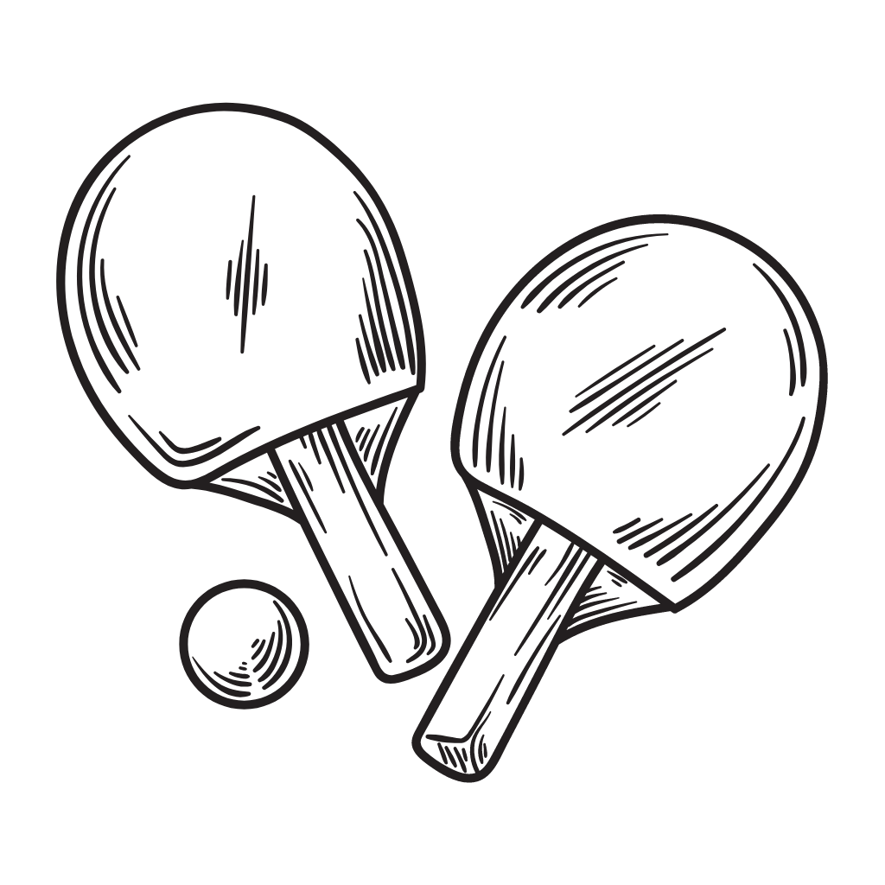
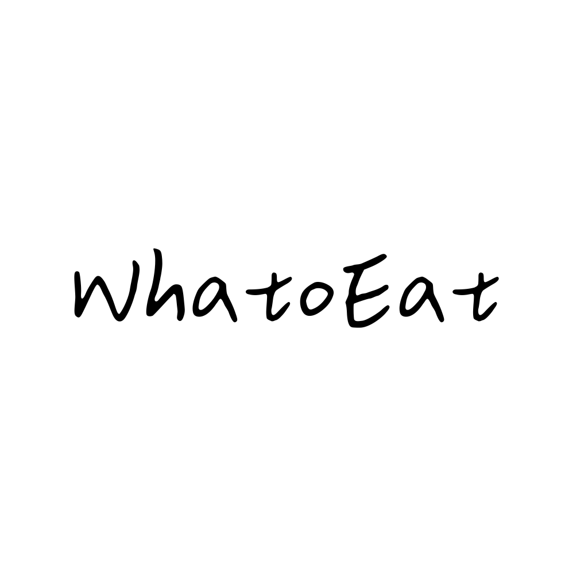
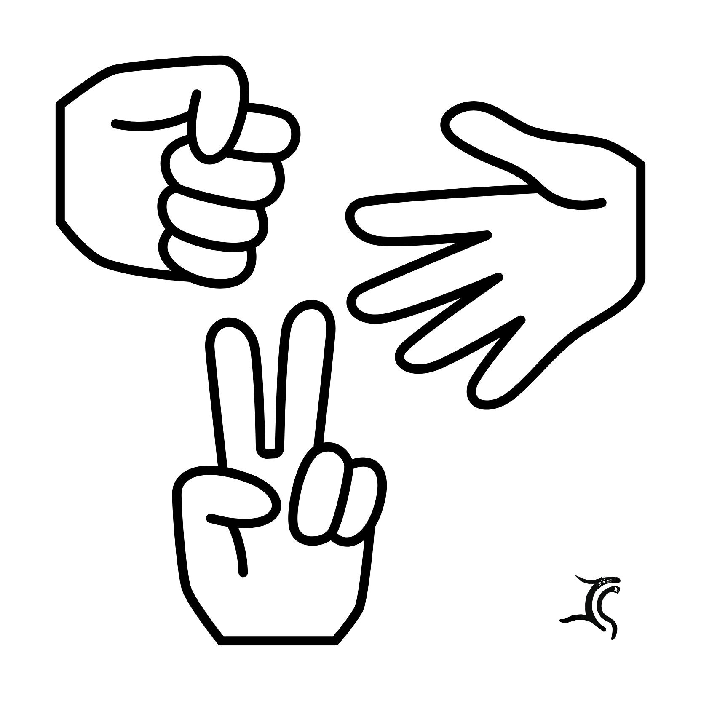

一款用 Swift 為 iOS 開發的節奏明快的 Pong 遊戲。它有與人機對戰以及兩人遊戲模式，與人機對戰又可以分為三個難度級別：簡單、中等和困難，分別能為玩家帶來不一樣的對戰體驗。

一款用 Swift 為 iOS 開發的抽籤程式，模擬遊戲抽卡系統，藉由卡片的滑動，抽取今天晚上要吃哪家餐廳或攤位作為晚餐。還可以點擊卡片，來翻看卡片背後的店家資訊。
一款以 Python 為基礎開發的 Discord 機器人，具有「某種程度上的」「貓」工智能，是一個娛樂類型的機器人，能為使用者帶來如同真實貓咪或許暖心或許煩躁的體驗過程。

一款用 Swift 為 iOS 開發的的猜拳遊戲，開發中，目前註冊以及登入的前端以及 MySQL 後端完成，遊戲大廳基本排版完畢。